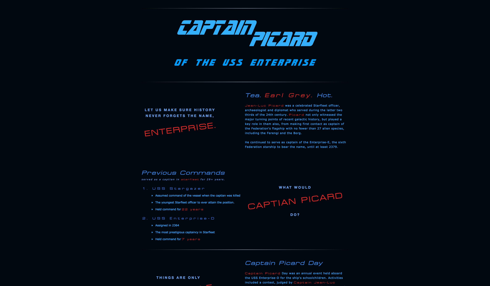
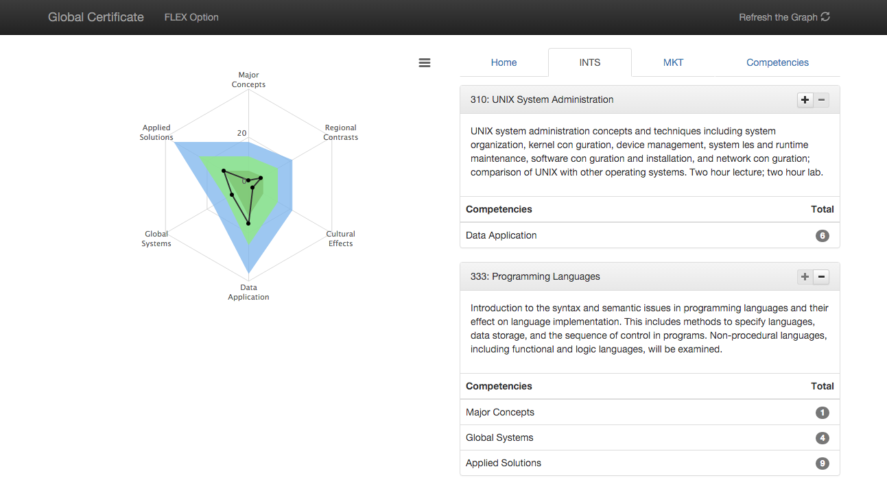

Hi! I’m Stevie Oberg and I like creating things that are useful and/or beautiful. Usually using code but also through art and writing. I’m currently working as an Software Developer but one day I hope to combine my love of tech and books to become a Librarian.
Projects
Picard

Web Design 1 Project 1: Using Typography to design a website.
See in Action |
View the Code
Save the Whales
 Web Design 1 Project 2: Playing with color and images by creating a
Non-Profit, Animal Conservation Site.
Web Design 1 Project 2: Playing with color and images by creating a
Non-Profit, Animal Conservation Site.
On the Radar

Software Engineering I Project: Develop a website to help advisors
and students curate a well-balanced course-load. The site was
written in PHP.